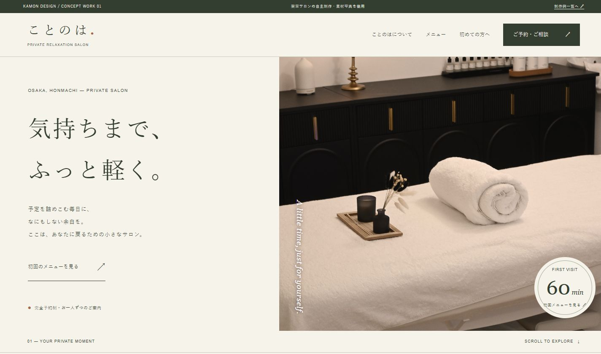
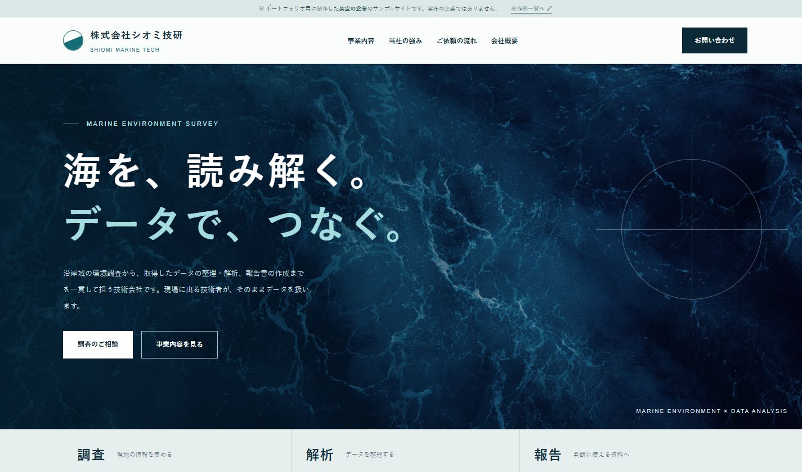
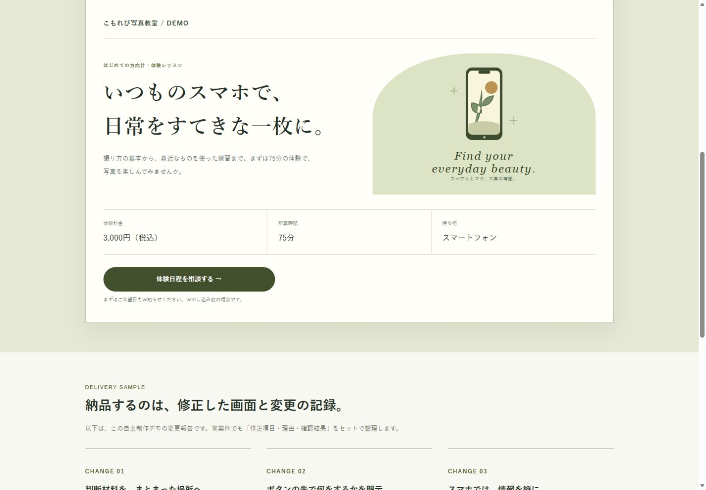

目的と情報を整理
誰に何を知ってほしいかを伺い、料金・サービス・相談先など必要な情報を組み立てます。
KAMON DESIGN｜掃部託矢
サービスの内容を伺い、構成・文章・デザイン・HTML/CSS実装まで。何から決めればよいか迷う段階から、一緒に整理します。
制作について相談する ↗01 / ABOUT THE CREATOR
はじめまして。KAMON DESIGNの掃部託矢です。
これまで、建設業の施工管理、経営コンサルタント、アパレル販売、配信業、Webデザイナーとして働いてきました。配信業ではストリーミング配信に加え、自分の楽曲も発信。現場で働く人、商品を選ぶ人、情報を届ける人、それぞれの視点を意識してきました。
現在はLinuxを基礎から学び、企画・構成から制作・確認まで、仕事を0から100まで一貫して任せてもらえる人を目指しています。ご依頼では「誰に何を届けるか」「相談する人が次に知りたいこと」を整理してページに反映。作業範囲・納品物・料金・日程を着手前にすり合わせ、確認点を共有しながら進めます。
HOW I WORK
専門用語や完成した原稿がなくても大丈夫です。目的と困りごとを伺い、必要な作業を一緒に整理します。
誰に何を知ってほしいかを伺い、料金・サービス・相談先など必要な情報を組み立てます。
納品物、修正回数、費用、日程を着手前に確認。追加作業も内容と金額を相談してから進めます。
文章や素材の整理、デザイン、HTML/CSS実装、表示とリンクの確認まで同じ窓口で担当します。
02 / SELECTED WORK
自主制作・デモを含む制作物です。納品・導入実績として紹介しているものではありません。

WEB / LANDING PAGE
料金、施術の流れ、よくある質問を初めての人が読みやすい順に整理しました。

CORPORATE WEBSITE
事業説明から依頼後の流れまで、知りたい情報を順に配置しました。

WEBSITE IMPROVEMENT
料金・所要時間・相談先を見つけやすく整理した改善デモです。
Excel・CSV集計ツールのデモを見る ↗ 複数CSVの統合、集計表・グラフ出力に対応する自主制作です。
記事制作例を見る ↗ 読者が次に動けるよう、情報を整理して書くことを心がけています。
03 / BUSINESS OVERVIEW
9つの分野と、現在の状況。
自分でも事業を企画し、作り、続け方を考えてきた経験を、お客さまへの提案や制作に活かしています。
LET’S MAKE IT CLEAR.
ご相談のときに分かる範囲で
対象URL、作りたい内容、希望時期、予算の目安をお知らせください。未定の項目はそのままで構いません。